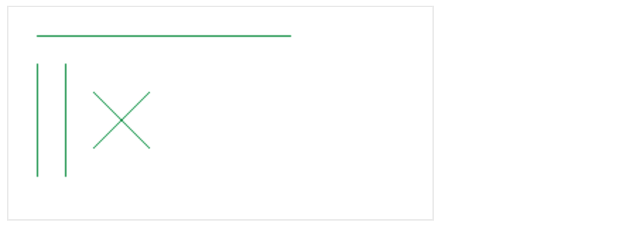

<!DOCTYPE html><html lang="zh-Hans"><head><meta charset="utf-8"><meta name="X-UA-Compatible" content="IE=edge"><title> javaScript系列 [11]-Canvas绘图(路径) · 花田半亩</title><meta name="description" content="javaScript系列 [11]-Canvas绘图(路径) - 文顶顶"><meta name="viewport" content="width=device-width, initial-scale=1"><link rel="icon" href="/logo.jpeg"><link rel="stylesheet" href="/css/apollo.css"><link rel="search" type="application/opensearchdescription+xml" href="https://weibo.com/u/3800117445/atom.xml" title="花田半亩"><meta name="generator" content="Hexo 5.4.0"><link rel="alternate" href="/atom.xml" title="花田半亩" type="application/atom+xml">
</head><body><div class="wrap"><header><a href="/" class="logo-link"></a><ul class="nav nav-list"><li class="nav-list-item"><a href="/" target="_self" class="nav-list-link">文顶顶</a></li><li class="nav-list-item"><a href="/tags/" target="_self" class="nav-list-link">标签</a></li><li class="nav-list-item"><a href="https://www.cnblogs.com/wendingding/" target="_blank" class="nav-list-link">博客园</a></li><li class="nav-list-item"><a href="https://github.com/flowerField" target="_blank" class="nav-list-link">GITHUB</a></li></ul></header><main class="container"><div class="post"><article class="post-block"><h1 class="post-title">javaScript系列 [11]-Canvas绘图(路径)</h1><div class="post-info">Apr 22, 2018<span class="post-count"></span> ✧ 字数统计:3.2k(字) &nbsp;&nbsp; ♨︎ 阅读时长:14(分钟)</div><div class="post-content"><div class='tip'>本文将介绍Canvas中的路径、矩形以及描边和填充等绘制方法，非零正交原则以及线性渐变等内容，并提供折线图和柱状图等综合案例。</div>

<h3 id="Canvas路径和状态"><a href="#Canvas路径和状态" class="headerlink" title="Canvas路径和状态"></a>Canvas路径和状态</h3><div class='titleX'>**核心API介绍**</div>

<p><span style='border:1px solid #ccc;padding:2px 10px;color:#666'><strong>设置绘制的起点</strong></span></p>
<p><strong><code>语法</code></strong> <code>ctx.moveTo(x, y);</code><br><strong><code>参数</code></strong> 第一个参数和第二个参数都是相对于<a href="">Canvas</a>画布左上角的X轴和Y轴坐标。<br><strong><code>作用</code></strong> 设置<a href="">Canvas</a>上下文绘制路径的起点，相当于设置画笔从哪个位置开始移动。<br><strong><code>注意</code></strong> 使用<a href="">Canvas</a>上下文绘制路径前必须先设置起点，否则绘制无效。</p>
<p><span style='border:1px solid #ccc;padding:2px 10px;color:#666'><strong>设置绘制目标点</strong></span></p>
<p><strong><code>语法</code></strong>  <code>ctx.lineTo(x, y);</code><br><strong><code>参数</code></strong>  第一个参数和第二个参数都是相对于<a href="">Canvas</a>画布左上角的X轴和Y轴坐标。<br><strong><code>作用</code></strong>  设置<a href="">Canvas</a>上下文绘制路径的目标点，相当于设置画笔移动的目标位置。</p>
<p><span style='border:1px solid #ccc;padding:2px 10px;color:#666'><strong>设置描边</strong></span></p>
<p><strong><code>语法</code></strong>  <code>ctx.stroke();</code><br><strong><code>作用</code></strong>  根据路径来绘制(描边)，可以在绘制前通过<code>strokeStyle</code>来设置描边样式。</p>
<p><span style='border:1px solid #ccc;padding:2px 10px;color:#666'><strong>设置填充</strong></span></p>
<p><strong><code>语法</code></strong>  <code>ctx.fill();</code><br><strong><code>作用</code></strong>  对闭合路径的内容进行绘制(填充),可以通过<code>fillStyle</code>来设置样式，默认黑色。<br><strong><code>参数</code></strong> <code>fill</code>方法有两个可选参数(<code>nonzero | evenodd</code>) ，控制填充时使用环绕原则(默认)或奇偶原则。</p>
<p><span style='border:1px solid #ccc;padding:2px 10px;color:#666'><strong>矩形路径</strong></span></p>
<p><strong><code>语法</code></strong>  <code>ctx.rect(x, y, width, height);</code><br><strong><code>参数</code></strong>  第一个参数和第二个参数都是矩形左上角坐标的X和Y轴坐标，第三和第四个参数为矩形的宽高。<br><strong><code>注意</code></strong>  <code>rect</code>方法只是规划了矩形的路径，并没有填充和描边，因此还需要搭配<code>stroke</code>或<code>fill</code>使用。</p>
<p><span style='border:1px solid #ccc;padding:2px 10px;color:#666'><strong>描边矩形</strong></span></p>
<p><strong><code>语法</code></strong>  <code>ctx.strokeRect(x, y, width, height);</code><br><strong><code>参数</code></strong>  第一个参数和第二个参数都是矩形左上角坐标的X和Y轴坐标，第三和第四个参数为矩形的宽高。<br><strong><code>作用</code></strong>  该方法绘制完矩形路径后立即进行<code>stroke</code>描边绘制，等价于<code>rect + stroke</code>组合。</p>
<p><span style='border:1px solid #ccc;padding:2px 10px;color:#666'><strong>填充矩形</strong></span></p>
<p><strong><code>语法</code></strong>  <code>ctx.fillRect(x, y, width, height);</code><br><strong><code>参数</code></strong>  第一个参数和第二个参数都是矩形左上角坐标的X和Y轴坐标，第三和第四个参数为矩形的宽高。<br><strong><code>作用</code></strong>  该方法绘制完矩形路径后立即进行<code>fill</code>填充绘制，等价于<code>rect + fill</code>方法的组合。</p>
<p><span style='border:1px solid #ccc;padding:2px 10px;color:#666'><strong>矩形擦除</strong></span></p>
<p><strong><code>语法</code></strong>  <code>ctx.clearRect(x, y, width, hegiht);</code><br><strong><code>参数</code></strong>  第一个参数和第二个参数都是矩形左上角坐标的X和Y轴坐标，第三和第四个参数为矩形的宽高。<br><strong><code>作用</code></strong>  该方法用于擦除指定矩形内绘制的内容，需注意如果重置画布宽度，内容将自动重绘。</p>
<p><span style='border:1px solid #ccc;padding:2px 10px;color:#666'><strong>开始和闭合路径</strong></span></p>
<p><strong><code>语法</code></strong>  <code>ctx.beginPath();</code>和<code>ctx.closePath();</code><br><strong><code>作用</code></strong>  开始路径的作用是将不同的绘制路径进行隔离，闭合路径会自动连接最开始和最后的点。<br><strong><code>注意</code></strong>  执行开始路径方法时表示将要重新绘制一个新的路径，可以分开设置和管理多个路径的样式。</p>
<div class='titleX'>**路径的核心属性介绍**</div>
<span class='prop'>**lineCap**</span> 设置或返回线条末端线帽样式，可选值有`butt默认`|`round圆形`|`square正方形`
<span class='prop'>**lineJoin**</span>设置或返回所创建边角的类型，可选值有`miter默认`|`round圆角`|`bevel斜角`
<span class='prop'>**lineWidth**</span>设置或返回当前线条的宽度，以像素计，默认值为1。
<span class='prop'>**miterLimit**</span>设置或返回最大斜接长度。
<span class='prop' style='background:#195;color:#fff'>**fillStyle**</span>设置或返回用于填充绘画的颜色、渐变或模式。
<span class='prop' style='background:#195;color:#fff'>**strokeStyle**</span>设置或返回用于笔触(描边)的颜色、渐变或模式。
<span class='prop'>**shadowColor**</span>设置或返回用于阴影的颜色，和`shadowBlur`一起使用。
<span class='prop'>**shadowBlur**</span>设置或返回用于阴影的模糊级别，和`shadowColor`一起使用。
<span class='prop'>**shadowOffsetX**</span>设置或返回阴影距形状的水平距离，0指示阴影位于形状的正下方。
<span class='prop'>**shadowOffsetY**</span>设置或返回阴影距形状的垂直距离，0指示阴影位于形状的正下方。

    
<h3 id="Canvas路径绘制示例"><a href="#Canvas路径绘制示例" class="headerlink" title="Canvas路径绘制示例"></a>Canvas路径绘制示例</h3><div class='titleX'>**路径绘制Demo**</div>
**`Demo-1 绘制交叉和平行线`**


<figure class="highlight javascript"><table><tr><td class="gutter"><pre><span class="line">1</span><br><span class="line">2</span><br><span class="line">3</span><br><span class="line">4</span><br><span class="line">5</span><br><span class="line">6</span><br><span class="line">7</span><br><span class="line">8</span><br><span class="line">9</span><br><span class="line">10</span><br><span class="line">11</span><br><span class="line">12</span><br><span class="line">13</span><br><span class="line">14</span><br><span class="line">15</span><br><span class="line">16</span><br><span class="line">17</span><br><span class="line">18</span><br><span class="line">19</span><br><span class="line">20</span><br><span class="line">21</span><br><span class="line">22</span><br><span class="line">23</span><br></pre></td><td class="code"><pre><span class="line"><span class="comment">//01 绘制一条直线</span></span><br><span class="line"><span class="keyword">var</span> canvas  = <span class="built_in">document</span>.getElementById(<span class="string">&quot;canvas&quot;</span>);</span><br><span class="line"><span class="keyword">var</span> ctx     = canvas.getContext(<span class="string">&quot;2d&quot;</span>);</span><br><span class="line"></span><br><span class="line">ctx.moveTo(<span class="number">20</span>,<span class="number">20.5</span>);</span><br><span class="line">ctx.lineTo(<span class="number">200</span>,<span class="number">20.5</span>);</span><br><span class="line">ctx.strokeStyle = <span class="string">&quot;#195&quot;</span>;   <span class="comment">//设置描边样式</span></span><br><span class="line">ctx.stroke();</span><br><span class="line"></span><br><span class="line"><span class="comment">//02 绘制两条平行线</span></span><br><span class="line">ctx.moveTo(<span class="number">20.5</span>,<span class="number">40</span>);        <span class="comment">//设置起点</span></span><br><span class="line">ctx.lineTo(<span class="number">20.5</span>,<span class="number">120</span>);       <span class="comment">//设置目标点</span></span><br><span class="line"></span><br><span class="line">ctx.moveTo(<span class="number">40.5</span>,<span class="number">40</span>);        <span class="comment">//设置起点</span></span><br><span class="line">ctx.lineTo(<span class="number">40.5</span>,<span class="number">120</span>);       <span class="comment">//设置目标点</span></span><br><span class="line">ctx.stroke();               <span class="comment">//绘制路径(描边)</span></span><br><span class="line"></span><br><span class="line"><span class="comment">//03 绘制两条交叉线条</span></span><br><span class="line">ctx.moveTo(<span class="number">60</span>,<span class="number">60</span>);          <span class="comment">//设置起点</span></span><br><span class="line">ctx.lineTo(<span class="number">100</span>,<span class="number">100</span>);        <span class="comment">//设置目标点</span></span><br><span class="line">ctx.moveTo(<span class="number">100</span>,<span class="number">60</span>);         <span class="comment">//设置起点</span></span><br><span class="line">ctx.lineTo(<span class="number">60</span>,<span class="number">100</span>);         <span class="comment">//设置目标点</span></span><br><span class="line">ctx.stroke();               <span class="comment">//绘制路径(描边) </span></span><br></pre></td></tr></table></figure>
<p><strong><code>Demo-2 开始路径和闭合路径</code></strong><br></p>
<figure class="highlight javascript"><table><tr><td class="gutter"><pre><span class="line">1</span><br><span class="line">2</span><br><span class="line">3</span><br><span class="line">4</span><br><span class="line">5</span><br><span class="line">6</span><br><span class="line">7</span><br><span class="line">8</span><br><span class="line">9</span><br><span class="line">10</span><br><span class="line">11</span><br><span class="line">12</span><br><span class="line">13</span><br><span class="line">14</span><br><span class="line">15</span><br><span class="line">16</span><br><span class="line">17</span><br><span class="line">18</span><br><span class="line">19</span><br><span class="line">20</span><br><span class="line">21</span><br><span class="line">22</span><br><span class="line">23</span><br><span class="line">24</span><br><span class="line">25</span><br><span class="line">26</span><br><span class="line">27</span><br><span class="line">28</span><br><span class="line">29</span><br><span class="line">30</span><br><span class="line">31</span><br></pre></td><td class="code"><pre><span class="line"><span class="keyword">var</span> canvas = <span class="built_in">document</span>.getElementById(<span class="string">&quot;canvas&quot;</span>);</span><br><span class="line"><span class="keyword">var</span> ctx    = canvas.getContext(<span class="string">&quot;2d&quot;</span>);</span><br><span class="line"></span><br><span class="line"><span class="comment">//001 绘制两条交叉的线(演示beginPath方法的使用)</span></span><br><span class="line"><span class="comment">//(1) 设置并绘制第一条线</span></span><br><span class="line">ctx.moveTo(<span class="number">50</span>,<span class="number">50</span>);</span><br><span class="line">ctx.lineTo(<span class="number">150</span>,<span class="number">150</span>);</span><br><span class="line">ctx.stroke();</span><br><span class="line"></span><br><span class="line"><span class="comment">//(2) 设置并绘制第二条线</span></span><br><span class="line">ctx.beginPath();         <span class="comment">//重新开启路径</span></span><br><span class="line">ctx.moveTo(<span class="number">50</span>,<span class="number">150</span>);</span><br><span class="line">ctx.lineTo(<span class="number">150</span>,<span class="number">50</span>);</span><br><span class="line"><span class="comment">//设置线条和描边的样式</span></span><br><span class="line">ctx.strokeStyle = <span class="string">&quot;red&quot;</span>;</span><br><span class="line">ctx.stroke();</span><br><span class="line"></span><br><span class="line"><span class="comment">//002 绘制两条相接的线(演示closePath方法的使用)</span></span><br><span class="line">ctx.beginPath();        <span class="comment">//重新开启路径</span></span><br><span class="line">ctx.moveTo(<span class="number">180.5</span>,<span class="number">20</span>);</span><br><span class="line">ctx.lineTo(<span class="number">180.5</span>,<span class="number">180.5</span>);</span><br><span class="line">ctx.lineTo(<span class="number">260</span>,<span class="number">180.5</span>);</span><br><span class="line"></span><br><span class="line"><span class="comment">//设置关闭路径(自动连接两个点闭合以构成封闭区域)</span></span><br><span class="line">ctx.closePath();</span><br><span class="line">ctx.strokeStyle = <span class="string">&quot;blue&quot;</span>;</span><br><span class="line">ctx.stroke();</span><br><span class="line"></span><br><span class="line"><span class="comment">//设置图形填充和样式</span></span><br><span class="line">ctx.fillStyle = <span class="string">&quot;#eee&quot;</span>;</span><br><span class="line">ctx.fill();</span><br></pre></td></tr></table></figure>

<p><strong><code>Demo-3 绘制虚线的N种方式</code></strong><br></p>
<figure class="highlight javascript"><table><tr><td class="gutter"><pre><span class="line">1</span><br><span class="line">2</span><br><span class="line">3</span><br><span class="line">4</span><br><span class="line">5</span><br><span class="line">6</span><br><span class="line">7</span><br><span class="line">8</span><br><span class="line">9</span><br><span class="line">10</span><br><span class="line">11</span><br><span class="line">12</span><br><span class="line">13</span><br><span class="line">14</span><br><span class="line">15</span><br><span class="line">16</span><br><span class="line">17</span><br><span class="line">18</span><br><span class="line">19</span><br><span class="line">20</span><br><span class="line">21</span><br><span class="line">22</span><br><span class="line">23</span><br><span class="line">24</span><br><span class="line">25</span><br><span class="line">26</span><br><span class="line">27</span><br><span class="line">28</span><br><span class="line">29</span><br><span class="line">30</span><br><span class="line">31</span><br><span class="line">32</span><br><span class="line">33</span><br><span class="line">34</span><br><span class="line">35</span><br><span class="line">36</span><br><span class="line">37</span><br><span class="line">38</span><br><span class="line">39</span><br><span class="line">40</span><br><span class="line">41</span><br></pre></td><td class="code"><pre><span class="line"><span class="keyword">var</span> canvas = <span class="built_in">document</span>.getElementById(<span class="string">&quot;canvas&quot;</span>);</span><br><span class="line"><span class="keyword">var</span> ctx    = canvas.getContext(<span class="string">&quot;2d&quot;</span>);</span><br><span class="line"></span><br><span class="line"><span class="comment">//001 绘制虚线的第一种方式(通过fillRect矩形绘制API)</span></span><br><span class="line"><span class="keyword">for</span>(<span class="keyword">var</span> i = <span class="number">0</span> ; i &lt; <span class="number">100</span> ; i++)</span><br><span class="line">&#123;</span><br><span class="line">    <span class="comment">//第一个参数：矩形的起点X</span></span><br><span class="line">    <span class="comment">//第二个参数：矩形的起点Y</span></span><br><span class="line">    <span class="comment">//第三个参数：矩形的宽度</span></span><br><span class="line">    <span class="comment">//第四个参数：矩形的高度</span></span><br><span class="line">    ctx.fillRect((i *<span class="number">2</span>),<span class="number">30</span>,<span class="number">1</span>,<span class="number">20</span>);</span><br><span class="line">    ctx.fillRect((i *<span class="number">2</span>),<span class="number">70</span>,<span class="number">1</span>,<span class="number">1</span>);</span><br><span class="line">    ctx.fillRect((i *<span class="number">5</span>),<span class="number">100</span>,<span class="number">1</span>,<span class="number">1</span>);</span><br><span class="line">&#125;</span><br><span class="line"></span><br><span class="line"><span class="comment">//002 绘制虚线的第二种方式(通过路径和setLineDash绘制API)</span></span><br><span class="line">ctx.moveTo(<span class="number">0</span>,<span class="number">130.5</span>);</span><br><span class="line">ctx.lineTo(<span class="number">200</span>,<span class="number">130.5</span>);</span><br><span class="line">ctx.setLineDash([<span class="number">5</span>]);</span><br><span class="line">ctx.stroke();</span><br><span class="line"></span><br><span class="line"><span class="comment">//开启路径绘制另一条虚线</span></span><br><span class="line">ctx.beginPath();</span><br><span class="line">ctx.moveTo(<span class="number">0</span>,<span class="number">160.5</span>);</span><br><span class="line">ctx.lineTo(<span class="number">200</span>,<span class="number">160.5</span>);</span><br><span class="line"><span class="comment">//参数说明[第一段的长度、第二段的长度、第三段的长度 * 重复]</span></span><br><span class="line">ctx.setLineDash([<span class="number">5</span>,<span class="number">10</span>,<span class="number">15</span>]);</span><br><span class="line">ctx.strokeStyle = <span class="string">&quot;red&quot;</span>;</span><br><span class="line">ctx.stroke();</span><br><span class="line"><span class="comment">//获取虚线的排列方式(不重复那段的排列方式)</span></span><br><span class="line"><span class="built_in">console</span>.log(ctx.getLineDash()); <span class="comment">//[5, 10, 15, 5, 10, 15]</span></span><br><span class="line"></span><br><span class="line"><span class="comment">//开启路径绘制另一条虚线(偏移量参照)</span></span><br><span class="line">ctx.beginPath();</span><br><span class="line">ctx.moveTo(<span class="number">0</span>,<span class="number">180.5</span>);</span><br><span class="line">ctx.lineTo(<span class="number">200</span>,<span class="number">180.5</span>);</span><br><span class="line"><span class="comment">//设置虚线的偏移量</span></span><br><span class="line">ctx.lineDashOffset = -<span class="number">30</span>;</span><br><span class="line">ctx.setLineDash([<span class="number">5</span>,<span class="number">10</span>,<span class="number">15</span>]);</span><br><span class="line">ctx.strokeStyle = <span class="string">&quot;red&quot;</span>;</span><br><span class="line">ctx.stroke();</span><br></pre></td></tr></table></figure>
<p><strong><code>Demo-4 绘制实心三角形和矩形(四边形)</code></strong></p>


<figure class="highlight javascript"><table><tr><td class="gutter"><pre><span class="line">1</span><br><span class="line">2</span><br><span class="line">3</span><br><span class="line">4</span><br><span class="line">5</span><br><span class="line">6</span><br><span class="line">7</span><br><span class="line">8</span><br><span class="line">9</span><br><span class="line">10</span><br><span class="line">11</span><br><span class="line">12</span><br><span class="line">13</span><br><span class="line">14</span><br><span class="line">15</span><br><span class="line">16</span><br><span class="line">17</span><br><span class="line">18</span><br><span class="line">19</span><br><span class="line">20</span><br><span class="line">21</span><br><span class="line">22</span><br><span class="line">23</span><br><span class="line">24</span><br><span class="line">25</span><br><span class="line">26</span><br><span class="line">27</span><br><span class="line">28</span><br><span class="line">29</span><br><span class="line">30</span><br><span class="line">31</span><br><span class="line">32</span><br><span class="line">33</span><br><span class="line">34</span><br></pre></td><td class="code"><pre><span class="line"><span class="keyword">var</span> canvas = <span class="built_in">document</span>.getElementById(<span class="string">&quot;canvas&quot;</span>);</span><br><span class="line"><span class="keyword">var</span> ctx    = canvas.getContext(<span class="string">&quot;2d&quot;</span>);</span><br><span class="line">   </span><br><span class="line"><span class="comment">//001 使用路径的方式绘制三角(边)形</span></span><br><span class="line">ctx.moveTo(<span class="number">20</span>,<span class="number">20</span>);</span><br><span class="line">ctx.lineTo(<span class="number">100</span>,<span class="number">20</span>);</span><br><span class="line">ctx.lineTo(<span class="number">80</span>,<span class="number">100</span>);</span><br><span class="line">ctx.closePath();</span><br><span class="line"><span class="comment">// ctx.lineTo(20,20);</span></span><br><span class="line"></span><br><span class="line"><span class="comment">//绘制(填充)</span></span><br><span class="line">ctx.fillStyle = <span class="string">&quot;#195&quot;</span>;</span><br><span class="line">ctx.fill();</span><br><span class="line"></span><br><span class="line"><span class="comment">//绘制(描边)</span></span><br><span class="line"><span class="comment">// ctx.stroke();</span></span><br><span class="line"></span><br><span class="line"><span class="comment">//002 使用路径的方式绘制四角(边)形</span></span><br><span class="line"><span class="comment">//备注：如果是填充的话，那么只需要四个点的坐标即可确定</span></span><br><span class="line">ctx.beginPath();</span><br><span class="line">ctx.moveTo(<span class="number">150</span>,<span class="number">20</span>);</span><br><span class="line">ctx.lineTo(<span class="number">350</span>,<span class="number">20</span>);</span><br><span class="line">ctx.lineTo(<span class="number">350</span>,<span class="number">100</span>);</span><br><span class="line">ctx.lineTo(<span class="number">150</span>,<span class="number">100</span>);</span><br><span class="line">ctx.lineTo(<span class="number">150</span>,<span class="number">20</span>);</span><br><span class="line"><span class="comment">// ctx.closePath();</span></span><br><span class="line">   </span><br><span class="line"><span class="comment">//绘制(描边)</span></span><br><span class="line"><span class="comment">// ctx.strokeStyle = &quot;red&quot;;</span></span><br><span class="line"><span class="comment">// ctx.stroke();</span></span><br><span class="line"></span><br><span class="line"><span class="comment">//绘制(填充)</span></span><br><span class="line">ctx.fillStyle = <span class="string">&quot;blue&quot;</span>;</span><br><span class="line">ctx.fill();</span><br></pre></td></tr></table></figure>
<p><strong><code>Demo-5 绘制矩形API使用示例</code></strong><br></p>
<figure class="highlight javascript"><table><tr><td class="gutter"><pre><span class="line">1</span><br><span class="line">2</span><br><span class="line">3</span><br><span class="line">4</span><br><span class="line">5</span><br><span class="line">6</span><br><span class="line">7</span><br><span class="line">8</span><br><span class="line">9</span><br><span class="line">10</span><br><span class="line">11</span><br><span class="line">12</span><br><span class="line">13</span><br><span class="line">14</span><br><span class="line">15</span><br><span class="line">16</span><br><span class="line">17</span><br><span class="line">18</span><br><span class="line">19</span><br><span class="line">20</span><br><span class="line">21</span><br><span class="line">22</span><br><span class="line">23</span><br></pre></td><td class="code"><pre><span class="line"><span class="keyword">var</span> canvas = <span class="built_in">document</span>.getElementById(<span class="string">&quot;canvas&quot;</span>);</span><br><span class="line"><span class="keyword">var</span> ctx    = canvas.getContext(<span class="string">&quot;2d&quot;</span>);</span><br><span class="line"></span><br><span class="line"><span class="comment">//绘制矩形API介绍</span></span><br><span class="line"><span class="comment">//001 使用rect + stroke|fill 方法绘制矩形(非独立路径)</span></span><br><span class="line"><span class="comment">//第一个参数：矩形左上角X</span></span><br><span class="line"><span class="comment">//第二个参数：矩形左上角Y</span></span><br><span class="line"><span class="comment">//第三个参数：矩形的宽度W</span></span><br><span class="line"><span class="comment">//第四个参数：矩形的高度H</span></span><br><span class="line">ctx.rect(<span class="number">20</span>,<span class="number">20</span>,<span class="number">300</span>,<span class="number">100</span>);</span><br><span class="line">ctx.stroke();                   <span class="comment">//绘制(描边)</span></span><br><span class="line"><span class="comment">// ctx.fill();                  //绘制(填充)</span></span><br><span class="line"></span><br><span class="line"><span class="comment">//002 使用fillRect绘制(独立路径)</span></span><br><span class="line">ctx.fillStyle = <span class="string">&quot;green&quot;</span>;        <span class="comment">//设置填充颜色</span></span><br><span class="line">ctx.fillRect(<span class="number">20</span>,<span class="number">150</span>,<span class="number">200</span>,<span class="number">40</span>);</span><br><span class="line"></span><br><span class="line"><span class="comment">//003 使用strokeRect绘制(独立路径)</span></span><br><span class="line">ctx.strokeStyle = <span class="string">&quot;red&quot;</span>;        <span class="comment">//设置描边颜色</span></span><br><span class="line">ctx.strokeRect(<span class="number">20</span>,<span class="number">210</span>,<span class="number">200</span>,<span class="number">50</span>);</span><br><span class="line"></span><br><span class="line"><span class="comment">//004 擦除画布</span></span><br><span class="line"><span class="comment">//ctx.clearRect(20,150,50,40);</span></span><br></pre></td></tr></table></figure>
<div class='titleX'>**柱状图综合案例**</div>


<figure class="highlight javascript"><table><tr><td class="gutter"><pre><span class="line">1</span><br><span class="line">2</span><br><span class="line">3</span><br><span class="line">4</span><br><span class="line">5</span><br><span class="line">6</span><br><span class="line">7</span><br><span class="line">8</span><br><span class="line">9</span><br><span class="line">10</span><br><span class="line">11</span><br><span class="line">12</span><br><span class="line">13</span><br><span class="line">14</span><br><span class="line">15</span><br><span class="line">16</span><br><span class="line">17</span><br><span class="line">18</span><br><span class="line">19</span><br><span class="line">20</span><br><span class="line">21</span><br><span class="line">22</span><br><span class="line">23</span><br><span class="line">24</span><br><span class="line">25</span><br><span class="line">26</span><br><span class="line">27</span><br><span class="line">28</span><br><span class="line">29</span><br><span class="line">30</span><br><span class="line">31</span><br><span class="line">32</span><br><span class="line">33</span><br><span class="line">34</span><br><span class="line">35</span><br><span class="line">36</span><br><span class="line">37</span><br><span class="line">38</span><br><span class="line">39</span><br><span class="line">40</span><br><span class="line">41</span><br><span class="line">42</span><br><span class="line">43</span><br><span class="line">44</span><br><span class="line">45</span><br><span class="line">46</span><br><span class="line">47</span><br><span class="line">48</span><br><span class="line">49</span><br><span class="line">50</span><br><span class="line">51</span><br><span class="line">52</span><br><span class="line">53</span><br><span class="line">54</span><br><span class="line">55</span><br><span class="line">56</span><br><span class="line">57</span><br><span class="line">58</span><br><span class="line">59</span><br><span class="line">60</span><br><span class="line">61</span><br><span class="line">62</span><br><span class="line">63</span><br><span class="line">64</span><br><span class="line">65</span><br><span class="line">66</span><br><span class="line">67</span><br><span class="line">68</span><br><span class="line">69</span><br><span class="line">70</span><br><span class="line">71</span><br><span class="line">72</span><br><span class="line">73</span><br><span class="line">74</span><br><span class="line">75</span><br><span class="line">76</span><br><span class="line">77</span><br><span class="line">78</span><br><span class="line">79</span><br><span class="line">80</span><br><span class="line">81</span><br><span class="line">82</span><br><span class="line">83</span><br><span class="line">84</span><br><span class="line">85</span><br><span class="line">86</span><br><span class="line">87</span><br><span class="line">88</span><br><span class="line">89</span><br><span class="line">90</span><br><span class="line">91</span><br><span class="line">92</span><br><span class="line">93</span><br><span class="line">94</span><br><span class="line">95</span><br><span class="line">96</span><br><span class="line">97</span><br><span class="line">98</span><br></pre></td><td class="code"><pre><span class="line"><span class="comment">//绘制柱状图的构造函数</span></span><br><span class="line"><span class="keyword">var</span> RectChart = <span class="function"><span class="keyword">function</span>(<span class="params">ctx</span>)</span>&#123;</span><br><span class="line">    <span class="built_in">this</span>.rects = <span class="literal">null</span>;</span><br><span class="line">    <span class="built_in">this</span>.ctx    = ctx || <span class="built_in">document</span>.getElementById(<span class="string">&quot;canvas&quot;</span>).getContext(<span class="string">&quot;2d&quot;</span>);</span><br><span class="line">    </span><br><span class="line">    <span class="comment">//设置计算参数</span></span><br><span class="line">    <span class="built_in">this</span>.m      = <span class="number">10</span>;</span><br><span class="line">    <span class="built_in">this</span>.w      = <span class="built_in">this</span>.ctx.canvas.width;</span><br><span class="line">    <span class="built_in">this</span>.h      = <span class="built_in">this</span>.ctx.canvas.height;</span><br><span class="line">    <span class="built_in">this</span>.cols   = <span class="built_in">Math</span>.floor(<span class="built_in">this</span>.w / <span class="built_in">this</span>.m);</span><br><span class="line">    <span class="built_in">this</span>.rows   = <span class="built_in">Math</span>.floor(<span class="built_in">this</span>.h / <span class="built_in">this</span>.m);</span><br><span class="line">    <span class="built_in">this</span>.pointW = <span class="number">6</span>;</span><br><span class="line">    <span class="built_in">this</span>.x      = <span class="number">50</span>;</span><br><span class="line">    <span class="built_in">this</span>.y      = <span class="number">350</span>;</span><br><span class="line">    <span class="built_in">this</span>.rectW  = <span class="number">40</span>;</span><br><span class="line">&#125;</span><br><span class="line"></span><br><span class="line"><span class="comment">//设置原型对象</span></span><br><span class="line">RectChart.prototype = &#123;</span><br><span class="line">    <span class="attr">constructor</span>:RectChart,</span><br><span class="line">    <span class="attr">init</span>:<span class="function"><span class="keyword">function</span>(<span class="params">rects</span>)</span>&#123;</span><br><span class="line">        <span class="built_in">this</span>.rects = rects;</span><br><span class="line">        <span class="built_in">this</span>.drawGrid();</span><br><span class="line">        <span class="built_in">this</span>.drawAxis();</span><br><span class="line">        <span class="built_in">this</span>.drawRect();</span><br><span class="line">    &#125;,</span><br><span class="line">    <span class="attr">drawGrid</span>:<span class="function"><span class="keyword">function</span>(<span class="params"></span>)</span>&#123;</span><br><span class="line">        <span class="comment">//002 设置路径</span></span><br><span class="line">        <span class="comment">//[1] 绘制所有的行</span></span><br><span class="line">        <span class="keyword">for</span>(<span class="keyword">var</span> i = <span class="number">1</span> ; i &lt; <span class="built_in">this</span>.rows ; i++)</span><br><span class="line">        &#123;</span><br><span class="line">            <span class="built_in">this</span>.ctx.moveTo(<span class="number">0</span>,(i * <span class="built_in">this</span>.m)+<span class="number">0.5</span>);</span><br><span class="line">            <span class="built_in">this</span>.ctx.lineTo(<span class="built_in">this</span>.w,(i * <span class="built_in">this</span>.m)+<span class="number">0.5</span>);</span><br><span class="line">        &#125;</span><br><span class="line"></span><br><span class="line">        <span class="comment">//[2] 绘制所有的列</span></span><br><span class="line">        <span class="keyword">for</span>(<span class="keyword">var</span> j = <span class="number">1</span> ; j &lt; <span class="built_in">this</span>.cols ; j++)</span><br><span class="line">        &#123;</span><br><span class="line">            <span class="built_in">this</span>.ctx.moveTo((j * <span class="built_in">this</span>.m) + <span class="number">0.5</span>,<span class="number">0</span>);</span><br><span class="line">            <span class="built_in">this</span>.ctx.lineTo((j * <span class="built_in">this</span>.m) + <span class="number">0.5</span>,<span class="built_in">this</span>.h);</span><br><span class="line">        &#125;</span><br><span class="line"></span><br><span class="line">        <span class="comment">//003 绘制网格</span></span><br><span class="line">        <span class="built_in">this</span>.ctx.strokeStyle = <span class="string">&quot;#ddd&quot;</span>;</span><br><span class="line">        <span class="built_in">this</span>.ctx.stroke();</span><br><span class="line">    &#125;,</span><br><span class="line">    <span class="attr">drawAxis</span>:<span class="function"><span class="keyword">function</span>(<span class="params"></span>)</span>&#123;</span><br><span class="line">        <span class="comment">//004 绘制坐标(横坐标和纵坐标 X-Y)</span></span><br><span class="line">        <span class="keyword">var</span> x = <span class="built_in">this</span>.x,</span><br><span class="line">            y = <span class="built_in">this</span>.y,</span><br><span class="line">            xl = <span class="number">650</span>,</span><br><span class="line">            yl = <span class="number">300</span>,</span><br><span class="line">            m  = <span class="built_in">this</span>.m;</span><br><span class="line">        <span class="built_in">this</span>.ctx.beginPath();</span><br><span class="line"></span><br><span class="line">        <span class="comment">//绘制X轴坐标</span></span><br><span class="line">        <span class="built_in">this</span>.ctx.moveTo(x,y);</span><br><span class="line">        <span class="built_in">this</span>.ctx.lineTo(x + xl,y);</span><br><span class="line">        <span class="built_in">this</span>.ctx.lineTo(x + xl - m,y - m/<span class="number">2</span>);</span><br><span class="line">        <span class="built_in">this</span>.ctx.lineTo(x + xl - m,y - m/<span class="number">2</span> + m);</span><br><span class="line">        <span class="built_in">this</span>.ctx.lineTo(x + xl,y);</span><br><span class="line">        <span class="built_in">this</span>.ctx.fill();</span><br><span class="line"></span><br><span class="line">        <span class="comment">//绘制Y轴坐标</span></span><br><span class="line">        <span class="built_in">this</span>.ctx.moveTo(x,y);</span><br><span class="line">        <span class="built_in">this</span>.ctx.lineTo(x,y - yl);</span><br><span class="line">        <span class="built_in">this</span>.ctx.lineTo(x - m/<span class="number">2</span>,y - yl + m);</span><br><span class="line">        <span class="built_in">this</span>.ctx.lineTo(x - m/<span class="number">2</span> + m,y - yl + m);</span><br><span class="line">        <span class="built_in">this</span>.ctx.lineTo(x,y - yl);</span><br><span class="line">        <span class="built_in">this</span>.ctx.fill();</span><br><span class="line"></span><br><span class="line">        <span class="built_in">this</span>.ctx.strokeStyle = <span class="string">&quot;#000&quot;</span>;</span><br><span class="line">        <span class="built_in">this</span>.ctx.stroke();</span><br><span class="line">    &#125;,</span><br><span class="line">    <span class="attr">drawRect</span>:<span class="function"><span class="keyword">function</span>(<span class="params"></span>)</span>&#123;</span><br><span class="line">        <span class="keyword">var</span> self = <span class="built_in">this</span>;</span><br><span class="line">        <span class="comment">//绘制坐标点的每条连接线</span></span><br><span class="line">        <span class="built_in">this</span>.ctx.beginPath();</span><br><span class="line">        <span class="built_in">this</span>.rects.forEach(<span class="function"><span class="keyword">function</span>(<span class="params">rect</span>)</span>&#123;</span><br><span class="line">            self.ctx.fillStyle = rect.color;</span><br><span class="line">            self.ctx.fillRect(rect.x,self.y - rect.h,self.rectW,rect.h);</span><br><span class="line">        &#125;)</span><br><span class="line">        <span class="built_in">this</span>.ctx.strokeStyle = <span class="string">&quot;#000&quot;</span>;</span><br><span class="line">        <span class="built_in">this</span>.ctx.stroke();</span><br><span class="line">    &#125;</span><br><span class="line">&#125;</span><br><span class="line"></span><br><span class="line"><span class="comment">//准备绘制数据</span></span><br><span class="line"><span class="keyword">var</span> rects = [</span><br><span class="line">    &#123;<span class="attr">x</span>:<span class="number">100</span>,<span class="attr">h</span>:<span class="number">50</span>,<span class="attr">color</span>:<span class="string">&quot;red&quot;</span>&#125;,</span><br><span class="line">    &#123;<span class="attr">x</span>:<span class="number">200</span>,<span class="attr">h</span>:<span class="number">250</span>,<span class="attr">color</span>:<span class="string">&quot;pink&quot;</span>&#125;,</span><br><span class="line">    &#123;<span class="attr">x</span>:<span class="number">300</span>,<span class="attr">h</span>:<span class="number">120</span>,<span class="attr">color</span>:<span class="string">&quot;#195&quot;</span>&#125;,</span><br><span class="line">    &#123;<span class="attr">x</span>:<span class="number">400</span>,<span class="attr">h</span>:<span class="number">300</span>,<span class="attr">color</span>:<span class="string">&quot;#47e&quot;</span>&#125;,</span><br><span class="line">    &#123;<span class="attr">x</span>:<span class="number">500</span>,<span class="attr">h</span>:<span class="number">20</span>,<span class="attr">color</span>:<span class="string">&quot;#302&quot;</span>&#125;</span><br><span class="line">  ]</span><br><span class="line"></span><br><span class="line"><span class="comment">//调用构造函数绘制</span></span><br><span class="line"><span class="keyword">new</span> RectChart().init(rects);</span><br></pre></td></tr></table></figure>
<h3 id="Non-Zero-Winding-Number-Rule-amp-Odd-even-Rule"><a href="#Non-Zero-Winding-Number-Rule-amp-Odd-even-Rule" class="headerlink" title="Non-Zero Winding Number Rule &amp; Odd-even Rule"></a>Non-Zero Winding Number Rule &amp; Odd-even Rule</h3>

<div class='titleX'>**非零正交(环绕)原则**</div>
我们在使用绘图上下文对象的`fill`方法进行填充绘制的时候，如果传递参数(`nonzero`)或默认不传递任何参数，那么在填充的时候使用**非零正交(环绕)原则**。

<blockquote>
<p><strong>非零正交(环绕)原则 · 规则</strong><br>❐ 在路径包围的区域中，向外发射一条和所有围绕它的边相交的射线<br>❐ 开启一个计数器，计数器的初始值为0<br>❐ 如果这个射线遇到顺时针围绕，那么计数器 +1<br>❐ 如果这个射线遇到顺时针围绕，那么计数器 -1<br>❐ 如果最终计数器的值非〇，则这块区域在路径内浏览器会对其进行填充。</p>
</blockquote>
<p>这里我们可以给出两个非零正交(环绕)原则应用的典型案例-绘制镂空矩形和圆环。</p>


<figure class="highlight javascript"><table><tr><td class="gutter"><pre><span class="line">1</span><br><span class="line">2</span><br><span class="line">3</span><br><span class="line">4</span><br><span class="line">5</span><br><span class="line">6</span><br><span class="line">7</span><br><span class="line">8</span><br><span class="line">9</span><br><span class="line">10</span><br><span class="line">11</span><br><span class="line">12</span><br><span class="line">13</span><br><span class="line">14</span><br><span class="line">15</span><br><span class="line">16</span><br><span class="line">17</span><br><span class="line">18</span><br><span class="line">19</span><br><span class="line">20</span><br><span class="line">21</span><br><span class="line">22</span><br><span class="line">23</span><br><span class="line">24</span><br><span class="line">25</span><br><span class="line">26</span><br></pre></td><td class="code"><pre><span class="line"><span class="keyword">var</span> canvas = <span class="built_in">document</span>.getElementById(<span class="string">&quot;canvas&quot;</span>);</span><br><span class="line"><span class="keyword">var</span> ctx    = canvas.getContext(<span class="string">&quot;2d&quot;</span>);</span><br><span class="line"></span><br><span class="line"><span class="comment">//绘制正方形(顺时针)</span></span><br><span class="line">ctx.moveTo(<span class="number">50</span>,<span class="number">50</span>);</span><br><span class="line">ctx.lineTo(<span class="number">150</span>,<span class="number">50</span>);</span><br><span class="line">ctx.lineTo(<span class="number">150</span>,<span class="number">150</span>);</span><br><span class="line">ctx.lineTo(<span class="number">50</span>,<span class="number">150</span>);</span><br><span class="line">ctx.lineTo(<span class="number">50</span>,<span class="number">50</span>);</span><br><span class="line"></span><br><span class="line"><span class="comment">//绘制正方形(逆时针)</span></span><br><span class="line">ctx.moveTo(<span class="number">75</span>,<span class="number">75</span>);</span><br><span class="line">ctx.lineTo(<span class="number">75</span>,<span class="number">125</span>);</span><br><span class="line">ctx.lineTo(<span class="number">125</span>,<span class="number">125</span>);</span><br><span class="line">ctx.lineTo(<span class="number">125</span>,<span class="number">75</span>);</span><br><span class="line">ctx.lineTo(<span class="number">75</span>,<span class="number">75</span>);</span><br><span class="line"><span class="comment">//设置填充(非零正交原则)</span></span><br><span class="line">ctx.fillStyle = <span class="string">&quot;#299&quot;</span>;</span><br><span class="line">ctx.fill();</span><br><span class="line"></span><br><span class="line"><span class="comment">//绘制圆环</span></span><br><span class="line">ctx.beginPath();</span><br><span class="line">ctx.arc(<span class="number">300</span>,<span class="number">100</span>,<span class="number">60</span>,<span class="number">0</span>,<span class="number">2</span> * <span class="built_in">Math</span>.PI,<span class="literal">false</span>);</span><br><span class="line">ctx.arc(<span class="number">300</span>,<span class="number">100</span>,<span class="number">40</span>,<span class="number">0</span>,<span class="number">2</span> * <span class="built_in">Math</span>.PI,<span class="literal">true</span>);</span><br><span class="line">ctx.fillStyle = <span class="string">&quot;rgba(250,50,79,1)&quot;</span>;</span><br><span class="line">ctx.fill();</span><br></pre></td></tr></table></figure>

<div class='titleX'>**奇偶填充原则**</div>
我们在使用绘图上下文对象的`fill`方法进行填充绘制的时候，如果传递参数(`evenodd`)那么在填充的时候使用**奇偶填充原则**。

<blockquote>
<p><strong>奇偶填充原则 · 规则</strong><br>❐ 在路径包围的区域中，向外发射一条和所有围绕它的边相交的射线<br>❐ 查看相交线的个数，如果为奇数，就填充，如果是偶数，就不填充。</p>
</blockquote>


<figure class="highlight javascript"><table><tr><td class="gutter"><pre><span class="line">1</span><br><span class="line">2</span><br><span class="line">3</span><br><span class="line">4</span><br><span class="line">5</span><br><span class="line">6</span><br><span class="line">7</span><br><span class="line">8</span><br><span class="line">9</span><br><span class="line">10</span><br><span class="line">11</span><br><span class="line">12</span><br><span class="line">13</span><br><span class="line">14</span><br><span class="line">15</span><br><span class="line">16</span><br><span class="line">17</span><br><span class="line">18</span><br><span class="line">19</span><br><span class="line">20</span><br><span class="line">21</span><br><span class="line">22</span><br><span class="line">23</span><br><span class="line">24</span><br><span class="line">25</span><br><span class="line">26</span><br><span class="line">27</span><br><span class="line">28</span><br><span class="line">29</span><br><span class="line">30</span><br><span class="line">31</span><br><span class="line">32</span><br></pre></td><td class="code"><pre><span class="line"><span class="keyword">var</span> canvas  = <span class="built_in">document</span>.getElementById(<span class="string">&#x27;canvas&#x27;</span>);</span><br><span class="line"><span class="keyword">var</span> ctx     = canvas.getContext(<span class="string">&#x27;2d&#x27;</span>);</span><br><span class="line"><span class="keyword">var</span> x = ctx.canvas.width / <span class="number">2</span>,</span><br><span class="line">    y = ctx.canvas.height/ <span class="number">2</span>,</span><br><span class="line">    r = <span class="number">50</span>,</span><br><span class="line">    start = - <span class="built_in">Math</span>.PI / <span class="number">2</span>,</span><br><span class="line">    end = <span class="built_in">Math</span>.PI * <span class="number">3</span> / <span class="number">2</span>;</span><br><span class="line"></span><br><span class="line">ctx.arc(x, y, r, start, end);</span><br><span class="line">ctx.fillStyle = <span class="string">&quot;#000&quot;</span>;</span><br><span class="line">ctx.fill();</span><br><span class="line">ctx.beginPath();</span><br><span class="line">ctx.moveTo(x, y - r);</span><br><span class="line">ctx.lineTo(x - r * <span class="built_in">Math</span>.sin(<span class="built_in">Math</span>.PI / <span class="number">5</span>), y + r * <span class="built_in">Math</span>.cos(<span class="built_in">Math</span>.PI / <span class="number">5</span>));</span><br><span class="line">ctx.lineTo(x + r * <span class="built_in">Math</span>.cos(<span class="built_in">Math</span>.PI / <span class="number">10</span>), y - r * <span class="built_in">Math</span>.sin(<span class="built_in">Math</span>.PI / <span class="number">10</span>));</span><br><span class="line">ctx.lineTo(x - r * <span class="built_in">Math</span>.cos(<span class="built_in">Math</span>.PI / <span class="number">10</span>), y - r * <span class="built_in">Math</span>.sin(<span class="built_in">Math</span>.PI / <span class="number">10</span>));</span><br><span class="line">ctx.lineTo(x + r * <span class="built_in">Math</span>.sin(<span class="built_in">Math</span>.PI / <span class="number">5</span>), y + r * <span class="built_in">Math</span>.cos(<span class="built_in">Math</span>.PI / <span class="number">5</span>));</span><br><span class="line">ctx.fillStyle = <span class="string">&quot;#fff&quot;</span>;</span><br><span class="line">ctx.fill();</span><br><span class="line"></span><br><span class="line">ctx.beginPath();</span><br><span class="line">ctx.arc(x + <span class="number">150</span>, y, r, start, end);</span><br><span class="line">ctx.fillStyle = <span class="string">&quot;#000&quot;</span>;</span><br><span class="line">ctx.fill();</span><br><span class="line">ctx.beginPath();</span><br><span class="line">ctx.moveTo(x + <span class="number">150</span>, y - r);</span><br><span class="line">ctx.lineTo(x + <span class="number">150</span> - r * <span class="built_in">Math</span>.sin(<span class="built_in">Math</span>.PI / <span class="number">5</span>), y + r * <span class="built_in">Math</span>.cos(<span class="built_in">Math</span>.PI / <span class="number">5</span>));</span><br><span class="line">ctx.lineTo(x + <span class="number">150</span> + r * <span class="built_in">Math</span>.cos(<span class="built_in">Math</span>.PI / <span class="number">10</span>), y - r * <span class="built_in">Math</span>.sin(<span class="built_in">Math</span>.PI / <span class="number">10</span>));</span><br><span class="line">ctx.lineTo(x + <span class="number">150</span> - r * <span class="built_in">Math</span>.cos(<span class="built_in">Math</span>.PI / <span class="number">10</span>), y - r * <span class="built_in">Math</span>.sin(<span class="built_in">Math</span>.PI / <span class="number">10</span>));</span><br><span class="line">ctx.lineTo(x + <span class="number">150</span> + r * <span class="built_in">Math</span>.sin(<span class="built_in">Math</span>.PI / <span class="number">5</span>), y + r * <span class="built_in">Math</span>.cos(<span class="built_in">Math</span>.PI / <span class="number">5</span>));</span><br><span class="line">ctx.fillStyle = <span class="string">&quot;#fff&quot;</span>;</span><br><span class="line">ctx.fill(<span class="string">&#x27;evenodd&#x27;</span>);</span><br></pre></td></tr></table></figure>


<hr>
<ul>
<li>Posted by 博客园·<a target="_blank" rel="noopener" href="http://www.cnblogs.com/wendingding/">文顶顶</a> | <a target="_blank" rel="noopener" href="http://wendingding.com/">花田半亩</a></li>
<li>联系作者 简书·<a target="_blank" rel="noopener" href="http://www.jianshu.com/users/c5703017b9f5/latest_articleshttp://www.jianshu.com/users/c5703017b9f5/latest_articles">文顶顶</a> 新浪微博·<a href="http://weibo.com/p/1005053800117445/home?from=page_100505&mod=TAB#place">Coder_文顶顶</a></li>
<li>原创文章，版权声明：自由转载-非商用-非衍生-保持署名 | <a target="_blank" rel="noopener" href="http://www.cnblogs.com/wendingding/">文顶顶</a></li>
</ul>
</div></article></div></main><footer><div class="paginator"><a href="/2018/04/23/javaScript%E7%B3%BB%E5%88%97%20%5B12%5D-Canvas%E7%BB%98%E5%9B%BE(%E6%9B%B2%E7%BA%BF)/" class="prev">上一篇</a><a href="/2018/04/21/javaScript%E7%B3%BB%E5%88%97%20%5B10%5D-Canvas%E7%BB%98%E5%9B%BE(%E5%9F%BA%E7%A1%80)/" class="next">下一篇</a></div><div class="copyright"><p>© 2015 - 2022 <a href="https://weibo.com/u/3800117445">文顶顶</a> &nbsp;☁ 全站字数统计 422k (字)</p></div></footer></div><script async src="//cdn.bootcss.com/mathjax/2.7.0/MathJax.js?config=TeX-MML-AM_CHTML" integrity="sha384-crwIf/BuaWM9rM65iM+dWFldgQ1Un8jWZMuh3puxb8TOY9+linwLoI7ZHZT+aekW" crossorigin="anonymous"></script></body></html>